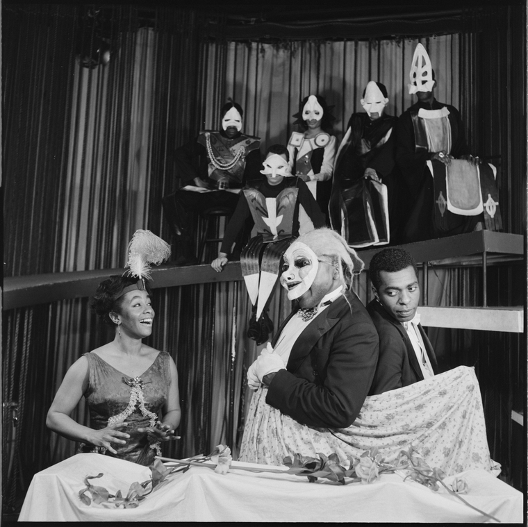

DESCRIPTION
The collection consists of over 1,520,000 images, black and white and color, on contact sheets with corresponding negatives (mostly 35 mm and 120), transparencies, slides, and prints taken by Martha Swope from circa 1955-2002 (bulk dates 1957-1994). There are also some programs and clippings filed with the images, often illustrating where the image was published or used. It documents Swope's career photographing theater productions, dance companies, such as American Ballet Theatre, Dance Theatre of Harlem, Martha Graham Dance Company, and New York City Ballet, opera productions, music groups, circus, film, television, individual performers, and performing arts-related personalities.
James Earl Jones and Roscoe Lee Browne
in the stage production The Blacks

(left to right) Raymond St. Jaques, Jay J. Riley, Maya Angelou,
and Lex Monson (in masks)in the stage production The Blacks

Helen Martin, unidentified actress, and Cynthia Belgrave
in the stage production The Blacks

Esther Rolle in the stage production,The Blacks
Lincoln Kilpatrick (lower right) and other actors
in a scene from the stage production The Blacks
Roscoe Lee Browne in the stage production,The Blacks